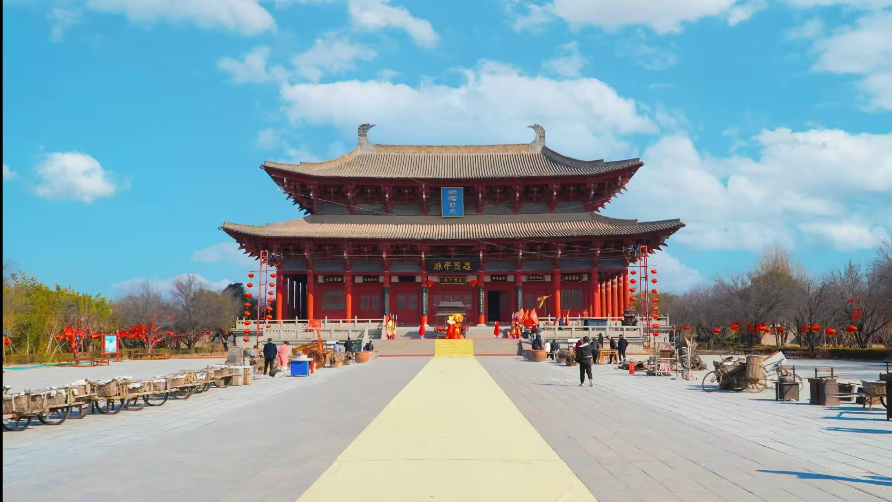
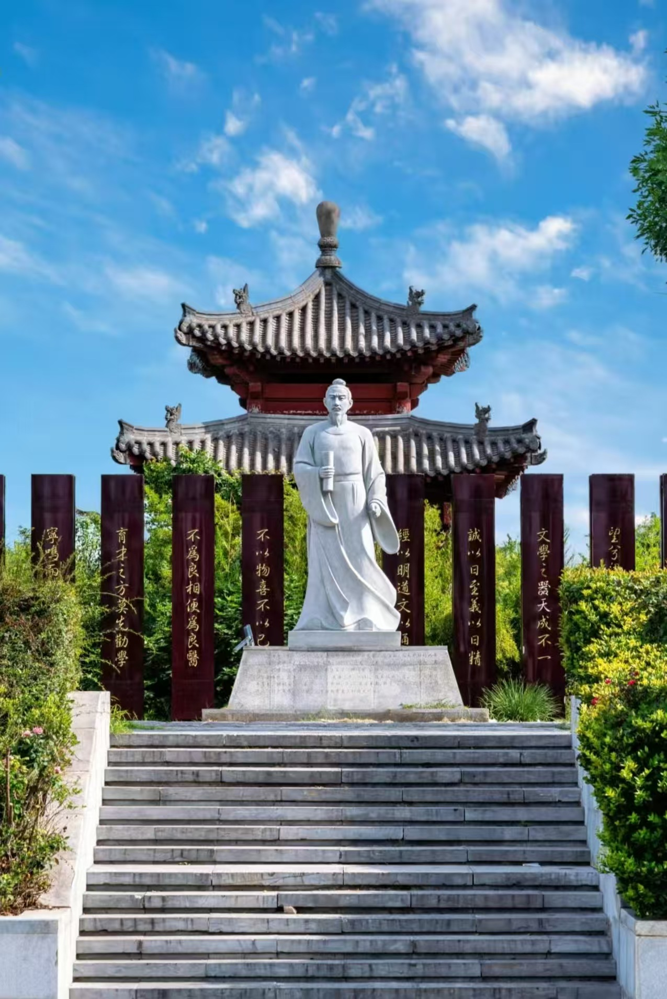
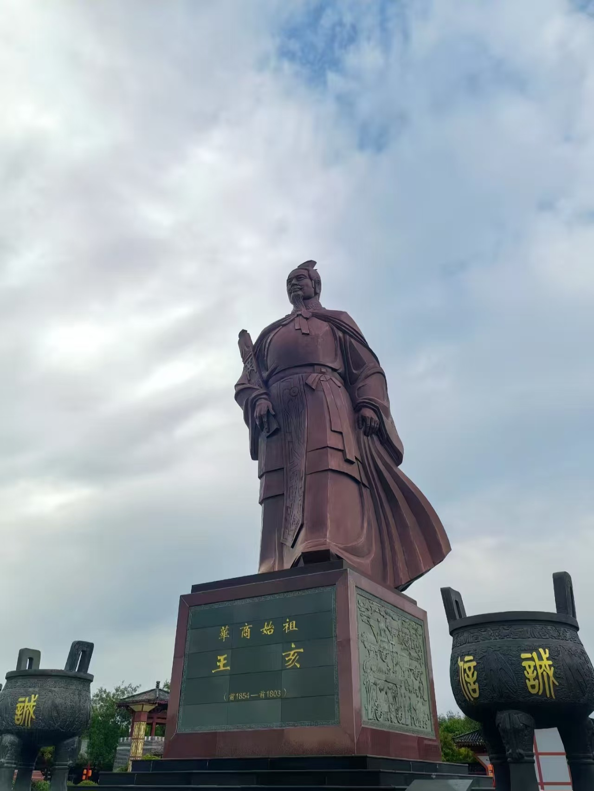
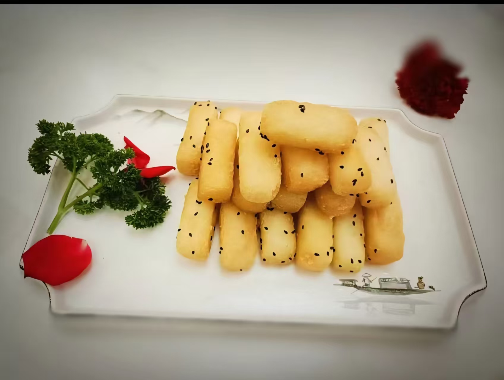
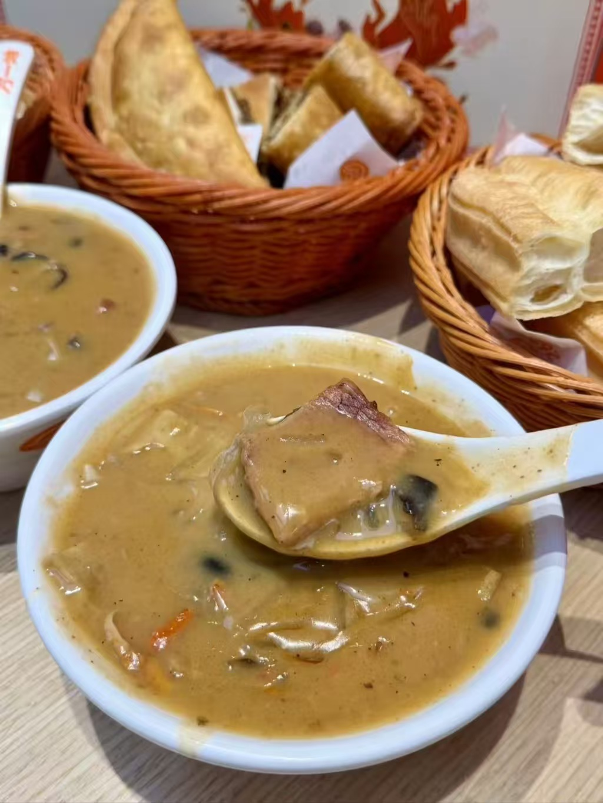
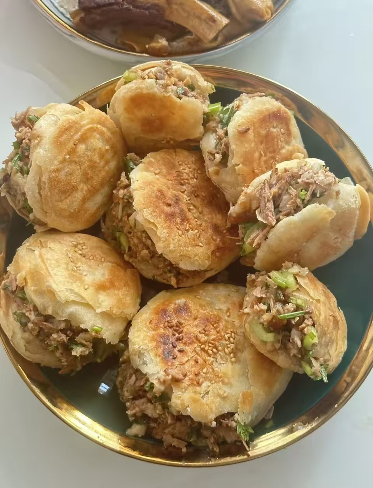

Shangqiu is a city where ancient history, quiet streets, cultural memory, and local life come together. It is not loud, but it leaves a deep impression.
Start the JourneyShangqiu is known as one of the important birthplaces of Shang culture. With its ancient city walls, traditional streets, peaceful lake views, and long cultural history, it offers a calm and meaningful travel experience.
Shangqiu carries the memory of thousands of years. It is a city deeply connected to the origins of Chinese civilization and traditional culture.
The old city preserves its historical layout, where walls, streets, and courtyards still reflect the rhythm of everyday life.
The connection between the ancient city and South Lake creates a unique landscape full of reflection, silence, and gentle beauty.
Explore the most representative places in Shangqiu and experience the city through its architecture, waterside views, and cultural landmarks.

A living ancient city where old walls, traditional lanes, and local life still exist side by side. It is the heart of Shangqiu’s cultural identity.
A peaceful waterside area beside the ancient city. At sunset, the lake reflects the city walls and creates a soft, poetic atmosphere.

One of the famous ancient academies in Chinese history. Its quiet courtyards and scholarly atmosphere show the educational spirit of the past.

A historical site associated with ancient fire worship and cultural legend. It adds mystery and depth to the story of Shangqiu.
Shangqiu is best enjoyed slowly. Its beauty is found in quiet moments, warm light, and the feeling of walking through history.
Begin your day by walking through the old streets of Shangqiu Ancient City.
Visit Yingtian Academy and enjoy the calm, scholarly spirit of the historic site.
Watch the golden light fade over South Lake and feel the city become softer and quieter.
Stay a little longer and see the ancient city under warm lights and peaceful skies.
Shangqiu’s food is simple, warm, and full of local character. It reflects the city’s everyday life and traditional flavors.

A traditional local dish known for its soft texture and comforting taste. It represents the familiar warmth of regional cuisine.

A popular spicy soup in Henan. Rich, hot, and satisfying, it is one of the most beloved breakfast flavors in the region.

Crispy on the outside and flavorful inside, this local snack is simple, filling, and easy to love.
Slow down, walk through its ancient streets, and discover a city where culture, scenery, and memory still live together.
Back to Home